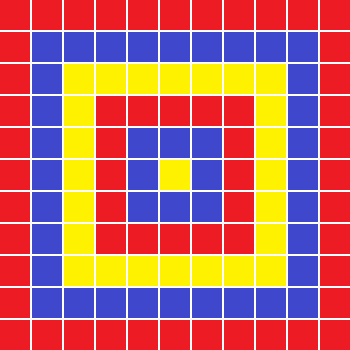
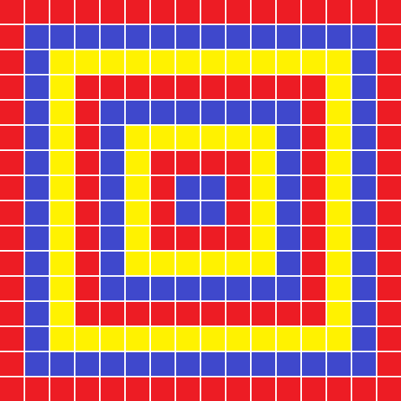
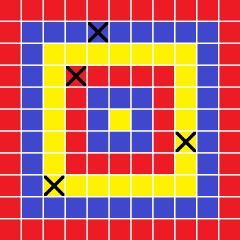

| 第10回日本情報オリンピック 予選３ |
|
|
2010年12月19日
情報オリンピック日本委員会
|
JOI 高校では， 1 × 1 の正方形のタイルを使って N × N の正方形の壁画を作り， 文化祭で展示することになった． タイルの色は，赤，青，黄の 3 種類である． 壁画のデザインは次の通りである． まず，最も外側の周に赤のタイルを貼り，その内側の周に青のタイルを貼る． さらにその内側の周に黄色のタイルを貼る． これを N × N の正方形が埋め尽くされるまで繰り返す． 用いるタイルの色は， 一番外側の周から順番に赤，青，黄，赤，青，黄，…である．
文化祭が近づいてきたある日， 壁画のうち K 枚のタイルがはがれていることが判明した． そこで，新しいタイルを購入して，はがれた箇所に新しいタイルを貼ることにした．
入力として壁画の一辺の長さ N と， はがれたタイルの枚数 K， K 枚のはがれたタイルの位置が与えられたとき， はがれたタイルの色を求めるプログラムを作成せよ．
例えば，N = 11 の場合，11 × 11 の壁画のデザインは下図の通りである．

また，N = 16 の場合，16 × 16 の壁画のデザインは下図の通りである．

入力は全部で 2+K 行からなる． 1 行目には，壁画の一辺の長さ N （1 ≦ N ≦ 1000000000 = 109）が， 2 行目には，はがれたタイルの枚数 K （1 ≦ K ≦ 1000）が書かれている． 2+i 行目（1 ≦ i ≦ K）には，2 つの整数 ai と bi （1 ≦ ai ≦ N, 1 ≦ bi ≦ N）が空白区切りで書かれており， i 枚目のはがれたタイルが， 左から ai 列目，上から bi 行目のタイルであることを表す．
入力の 3 行目から 2+K 行目には同じタイルを表す行が重複して現れることはない． また，与えられる入力データ 40% では， N ≦ 1000 をみたしている．
出力は K 行からなる． 各行は 1 つの整数からなり， i 行目（1 ≦ i ≦ K）の整数は，i 枚目のはがれたタイルが赤のときは 1 を，青のときは 2 を，黄色のときは 3 を表す．
| 入力例1 | 入力例2 |
|---|---|
11 4 5 2 9 7 4 4 3 9 |
16 7 3 7 5 2 11 6 15 2 9 7 8 12 15 16 |
| 出力例1 | 出力例2 |
2 3 1 3 |
3 2 3 2 1 2 1 |
入力例 1 において，11 × 11 の壁画は以下の図の通りである．
「×」は，はがれたタイルを表す．

※各入出力例のデータは， 右クリック等によりファイルに保存して利用可能です．